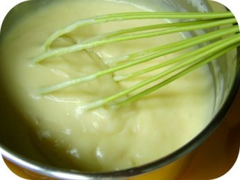

Crème pâtissière de Mamie
Ingrédients
6×
- 0.5 l de lait
- vanille
- 3 jaunes d'oeufs
- 70 g de sucre
- 30 g de farine

Préparation
Étape 1
Porter à ébullition 0.5 l de lait avec de la vanille.
Étape 2
Blanchir 3 jaunes d'oeufs avec 70 g de sucre, puis ajouter 30 g de farine et le lait bouillant.
Étape 3
Cuire 1 à 2min sur feu moyen en remuant.
Résumé
0.5 l de lait
vanille
Porter à ébullition
3 jaunes d'oeufs
70 g de sucre
30 g de farine
Blanchir
Cuire feu moyen